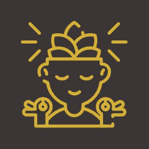

РОЗСЛАБЛЕННЯ ТА ЗНЯТТЯ СТРЕСУ
ПОКРАЩЕННЯ САМОПОЧУТТЯ

ЗНИЖЕННЯ БОЛЮ
ПІДВИЩЕННЯ КРАСИ ТА ВПЕВНЕНОСТІ В СОБІ

Баночний масаж — це процедура, яка використовує вакуум для стимуляції кровообігу, покращення лімфодренажу та стану м’язів...
Ми пропонуємо широкий спектр масажів, включаючи класичний, релакс, лімфодренажний, антицелюлітний та багато інших.
Рекомендуємо записуватися заздалегідь, щоб гарантувати наявність вільного часу.
Стандартна тривалість сеансу масажу становить 30-60 хвилин, але ми також пропонуємо 90-хвилинні сеанси.
Так, ми пропонуємо послугу парного масажу для двох людей одночасно.
Ми дотримуємося всіх рекомендацій щодо гігієни та безпеки, включаючи регулярну дезінфекцію приміщень та використання масок.
Так, ми оформлюємо подарункові сертифікати на будь-яку суму або конкретну процедуру — чудовий подарунок близькій людині.